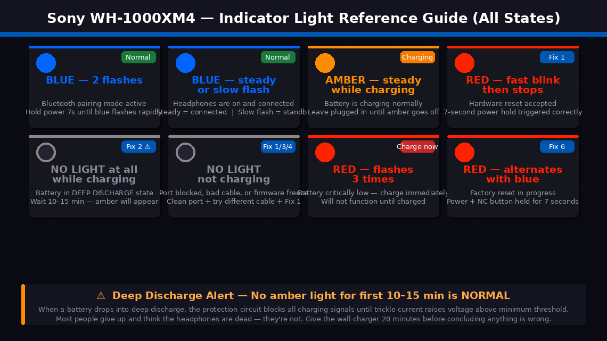
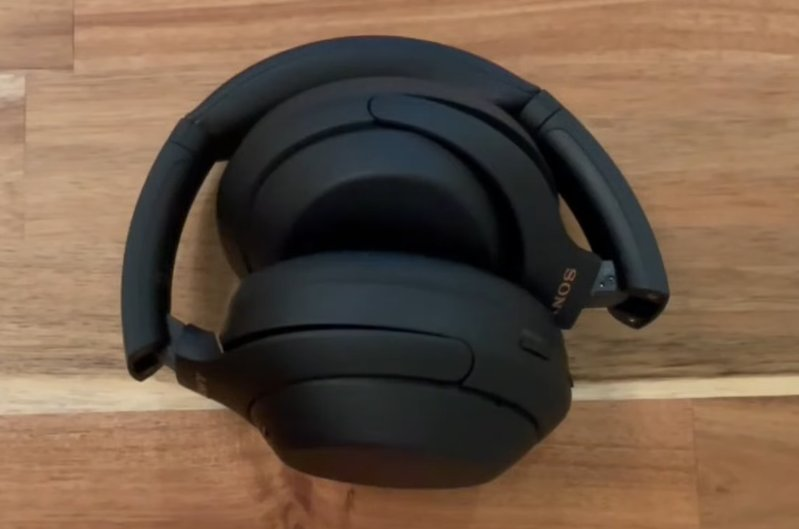
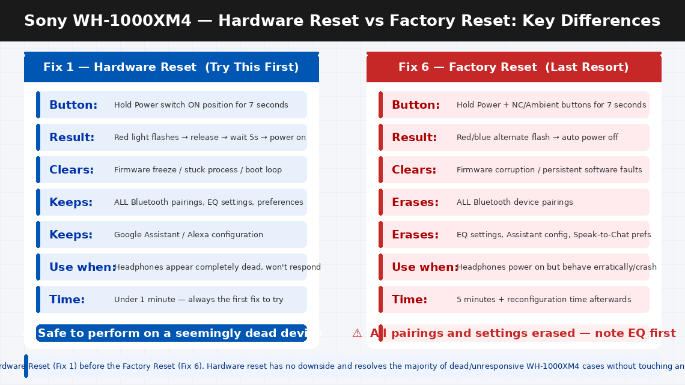
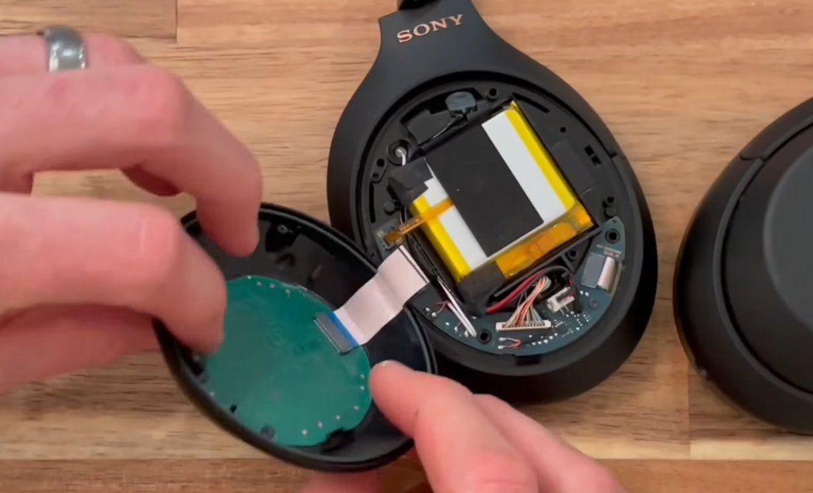
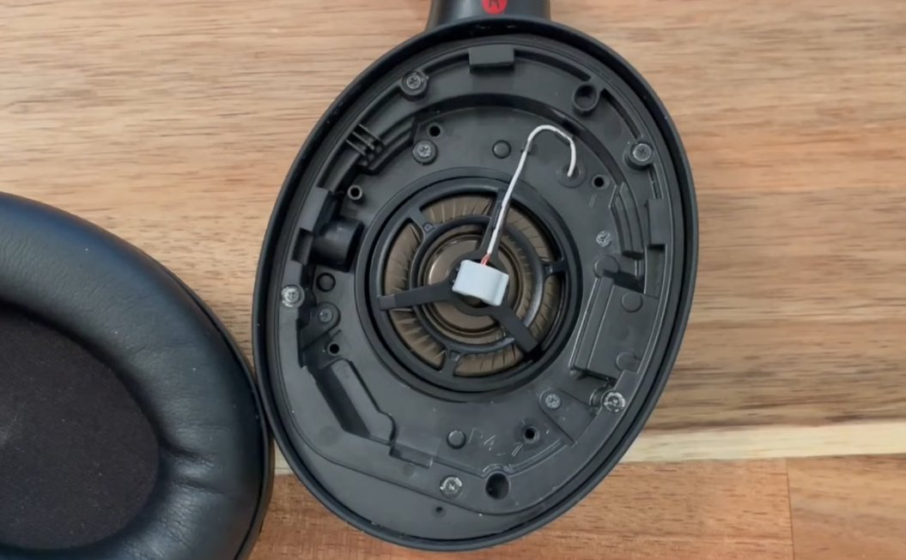

Dead and Silent. Your WH-1000XM4 Won’t Respond.
There’s nothing more deflating than reaching for your Sony WH-1000XM4 headphones before a long commute, a flight, or a focused work session — pressing the power button and getting absolutely nothing. No blue light. No startup chime. No voice prompt saying “Power on.” Just silence and a dead pair of headphones that cost a significant amount of money and were working perfectly yesterday.
You plug them in to charge. Still nothing — no amber light, no indication the cable is doing anything at all. You try a different cable. Same result. You hold the power button for longer. Nothing.
Here’s what you need to hear before you do anything else: the WH-1000XM4 not turning on or charging is one of the most commonly reported issues for this model, and in the vast majority of cases it is caused by a firmware freeze, a deep discharge state, or a charging port obstruction — all of which are completely fixable at home without tools, without a service centre, and without losing any of your settings.
This guide walks you through every fix in order, starting with the one that works most often.
What Does “Won’t Turn On or Charge” Actually Mean?
Unlike a device with an error code displayed on a screen, the WH-1000XM4 communicates through lights and sounds — and when it does neither, it can be hard to know what’s actually happening inside. Understanding the three distinct scenarios that produce this symptom helps you identify the right fix faster.
Scenario 1: Completely unresponsive — no light, no sound, no vibration on any button press. This almost always means one of two things: the battery has reached a state of deep discharge (below the minimum voltage at which the headphones can self-start), or the firmware has frozen in a state where it is consuming battery without functioning — essentially a software crash that looks like a dead device.
Scenario 2: Won’t turn on but shows a charging light when plugged in. This means the battery is critically low but not completely dead. The charging circuit is working. The headphones simply need 15–30 minutes of charging before they have enough charge to power the rest of the system.
Scenario 3: No light at all even when plugged into a charger. This points to either a charging port blockage, a faulty cable, an insufficient power source — or in rarer cases, a completely exhausted battery that needs a sustained trickle charge before it responds. In plain English: your WH-1000XM4 is not broken. It is most likely frozen, deeply discharged, or blocked from charging by something simple.
Tools Required
You need very little for this fix. Here’s the complete list:
- Your Sony WH-1000XM4 headphones
- The original USB-C charging cable (and a known-working replacement if you have one)
- A wall charger rated at 5V / 1A or higher — a standard phone charger works perfectly
- A clean, dry wooden toothpick or cocktail stick (for cleaning the USB-C port — never use metal)
- A can of compressed air (optional but helpful for port cleaning)
- About 30–60 minutes of patient charging time
- No screwdrivers required for any of the fixes in this guide
6 Fixes — Easiest to Most Technical
Work through these carefully in order. The WH-1000XM4 not turning on is resolved at Fix 1 or Fix 2 for the overwhelming majority of users.
The Sony WH-1000XM4 has a dedicated hardware reset function that is completely separate from the power button. This reset clears the firmware’s operating state, releases any frozen process consuming the battery, and returns the headphones to a clean startup condition — all without affecting your paired devices, EQ settings, or personalisation data.
This is the single most effective fix for a WH-1000XM4 that appears completely dead, and it takes about seven seconds.
- Hold the Power button (the sliding switch on the left earcup) in the ON position for 7 seconds.
- You are not simply turning the headphones on — you are holding past the normal power-on point. Keep holding firmly for the full 7 seconds even if nothing seems to happen.
- The indicator light will flash red, then release. You may hear a short notification sound or feel a slight vibration.
- Release the power switch.
- Wait 5 seconds, then slide the power switch to the ON position normally (a brief press rather than a hold).
- Listen for the startup chime and voice prompt — “Power on” — and watch for the blue indicator light.
If the headphones power on, the firmware was frozen. Use them normally for a day and monitor whether the issue recurs — if it does, a firmware update via the Sony Headphones Connect app (Fix 5) may be needed.
If nothing happens after the 7-second hold, the battery is likely too depleted to respond to the reset. Move to Fix 2.
Deep battery discharge is the second most common cause of a completely unresponsive WH-1000XM4. When a lithium battery drops below approximately 3.0V per cell — which happens after being left unused for several months, or after being stored at a very low charge level — the headphones’ protection circuit prevents the battery from taking a normal charge until a sustained trickle charge raises the voltage back above the minimum threshold.
During this trickle charge phase, the headphones may show no light at all for the first 5–15 minutes — which many users interpret as a dead device and give up too early.
- Use the original Sony USB-C cable or a high-quality replacement — avoid cheap cables that can’t maintain consistent current.
- Plug the cable into a wall charger rated at 5V / 1A or higher. Do not charge from a laptop USB port, a car USB port, or a low-power USB hub — these often supply insufficient or inconsistent current.
- Connect the cable to the USB-C port on the left earcup of the headphones.
- Wait patiently. If the battery is in deep discharge, the amber charging light may not appear for up to 15 minutes. This is normal and does not indicate the cable or charger isn’t working.
- Once the amber light appears, the battery has recovered enough voltage to begin normal charging. Allow the headphones to charge for at least 30 minutes before attempting to power them on.
- After 30 minutes of charging, try the hardware reset from Fix 1 while the cable is still connected.
If no light appears after 20 minutes with two different cables and a wall charger, move to Fix 3 to check the charging port.

A USB-C port that appears visually clear can still have enough lint, dust, or pocket debris compacted inside it to prevent the cable from making full electrical contact. This is an extremely common hidden cause of “not charging” on all USB-C devices — and it’s one of the most satisfying fixes because it’s free, takes two minutes, and works immediately.
- Hold the left earcup under a bright light and look into the USB-C port closely — use your phone’s camera zoom if needed.
- Look for any compacted grey or brown material (lint from pockets or bags) at the back of the port. Even a thin layer is enough to prevent full cable insertion.
- If you have compressed air, give two or three short bursts directly into the port from a slight angle — this dislodges loose debris effectively.
- Use a dry wooden toothpick to gently work any compacted material loose from the sides and back of the port. Work carefully and slowly, using the toothpick edge rather than the tip to avoid touching the metal contacts directly.
- Give another burst of compressed air after loosening the debris to blow it clear.
- Reconnect the USB-C cable — it should now seat with a more solid, fully inserted feel. A clean port accepts a cable with a firm click; a port with debris feels like the cable stops short.
- Observe the indicator light. If an amber light now appears, the port was blocked.
Before concluding there’s any hardware fault with the headphones themselves, systematically eliminate the cable and charger as variables. A USB-C cable that charges your phone flawlessly can still fail to charge the WH-1000XM4 if it is a charge-only cable (without the data pins that some Sony devices require for the charging handshake) or if the cable has a damaged internal conductor.
- Try a completely different USB-C cable — ideally one from a different manufacturer or a different device.
- Try a different wall charger as well — ideally one rated 5V / 1A or higher. The charger that came with a recent Android phone is ideal.
- Try charging from a laptop’s USB-C port as a diagnostic test — laptop ports often have different current delivery characteristics and sometimes work when wall chargers don’t (or vice versa).
- After each cable and charger combination, wait 10 minutes and observe the indicator light.
- If any combination produces the amber charging light, the original cable or charger was faulty — use the working combination going forward and replace the faulty component.
- If no combination produces any light on the headphones after a cleaned port and 10 minutes of charge time, the fault is in the headphones’ charging circuit. Move to Fix 5.

If the headphones are charging (the amber light appears) but still won’t power on or behave erratically — powering on briefly then off, playing no audio, or freezing on startup — a corrupted or outdated firmware may be preventing normal operation. Sony has released multiple firmware updates for the WH-1000XM4 that address exactly these startup and power management issues.
- Charge the headphones for at least 30 minutes until the amber light is showing.
- Download the Sony Headphones Connect app from the App Store (iOS) or Google Play (Android) if you don’t already have it.
- Put the headphones in pairing mode — press and hold the power switch for 7 seconds until the blue light flashes rapidly.
- Open the Sony Headphones Connect app and connect to the WH-1000XM4.
- Navigate to the System tab within the app and look for a Firmware Update notification — if one is available, it will be displayed prominently.
- Install any available update. Keep the headphones within range of your phone and keep them connected throughout — do not let the app go to background during a firmware update.
- After the update completes, the headphones will restart automatically. Test normal power-on behaviour.
If all previous fixes have not resolved the issue and the headphones are at least partially functional (can power on with difficulty or work intermittently), a full factory reset wipes all paired device data and resets all internal settings to default. This sometimes resolves persistent firmware corruption that the hardware reset in Fix 1 does not clear.
- Power the headphones on. If they won’t power on, charge for 30 minutes first.
- Press and hold the Power button and the NC/Ambient button simultaneously (both buttons on the left earcup) for 7 seconds.
- The indicator light will flash red and then go off — this confirms the factory reset has been accepted.
- The headphones will power off automatically.
- Power them back on normally with a brief press of the power switch.
- Re-pair them with your devices via the Sony Headphones Connect app and reconfigure your preferences.



When to Call a Professional
The Sony WH-1000XM4 is a premium device with no user-serviceable internal components. When the fixes above have been fully completed without success, the path forward is Sony’s service programme.
Contact Sony support or a service centre when:
- No charging light appears with multiple confirmed-working cables, a clean port, and a wall charger after following all the steps above. The charging circuit, battery protection IC, or battery itself may have failed — all require service-level repair or battery replacement.
- The headphones power on but shut off within seconds, even after a full charge and a firmware update. This startup-then-immediate-shutdown pattern is a battery cell failure symptom. The WH-1000XM4 battery is rated for approximately 500 charge cycles and genuine capacity degradation begins between 2–4 years of regular use.
- Physical damage is visible — a bent or broken USB-C port, impact damage to the earcup, or moisture exposure. Sony’s warranty explicitly excludes physical damage, but Sony’s paid repair service can replace the charging board or battery in most cases.
- Your WH-1000XM4 is within its warranty period. Sony offers a 1-year limited warranty in India and the US. A device that won’t charge or power on under normal use conditions is a warranty claim — do not attempt to open the headphones before making a warranty claim, as this voids coverage.
To reach Sony support:
- India: sony.co.in/support — Customer care: 1800-103-7799 (toll-free, Monday to Saturday)
- US: sony.com/en/articles/support-contact-information — Phone: 1-800-222-7669
Sony operates walk-in service centres in major Indian cities — find your nearest location via the Sony India website using your city or PIN code. Walk-in service for the WH-1000XM4 typically delivers a diagnosis within one business day.
Quick Summary
| Fix | Difficulty | Time Needed |
|---|---|---|
| Hardware reset (hold power 7 seconds) | Very Easy | 1 minute |
| Charge with wall adapter for 30 minutes | Very Easy | 30 min (passive) |
| Clean the USB-C charging port | Easy | 5 minutes |
| Test different cables and chargers | Very Easy | 10 minutes |
| Update firmware via Headphones Connect app | Easy | 15 minutes |
| Factory reset (Power + NC button 7 seconds) | Moderate | 5 min + reconfigure |
Start with Fix 1 every single time — even if the headphones feel completely dead. The 7-second hardware reset has revived more “dead” WH-1000XM4s than any other single step, takes under a minute, and has no downside. Follow immediately with Fix 2 if needed, and you will cover the two causes that account for the vast majority of cases before you’ve even been through the first ten minutes of this guide.
Brought your WH-1000XM4 back to life with one of these steps? The deep discharge situation in Fix 2 — where no charging light appears for the first 10–15 minutes — catches most people out. If you put your headphones away for a few months with low battery and come back to find them completely dead, give the wall charger 20 minutes of patience before concluding anything is wrong. Lithium batteries in deep discharge are slow to wake up, but they almost always do.